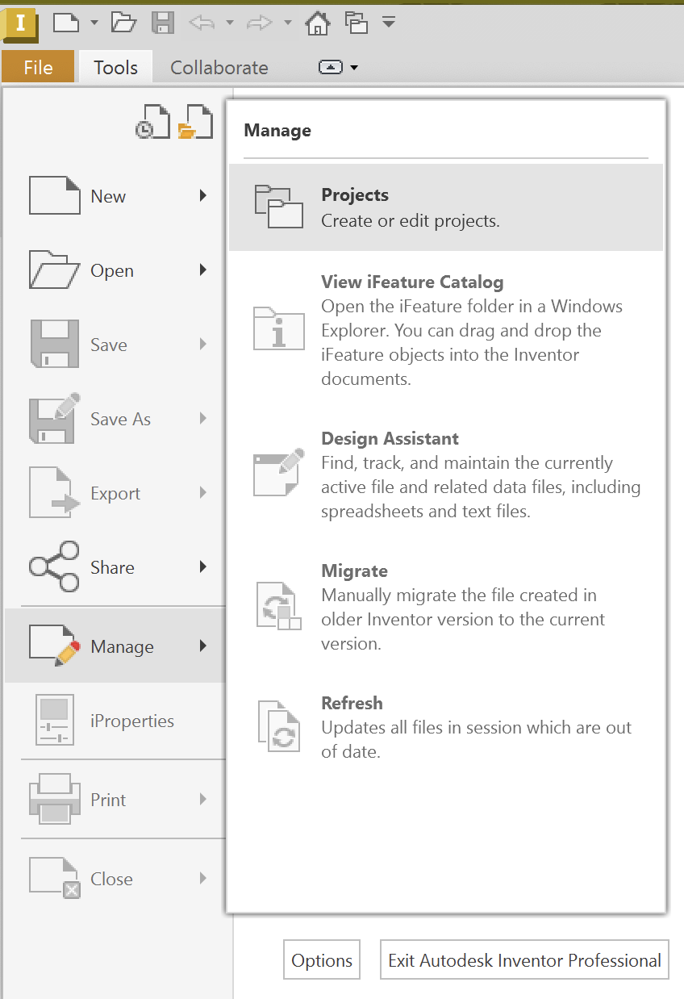
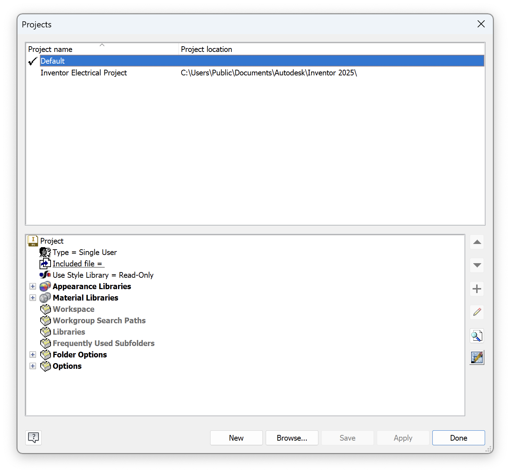
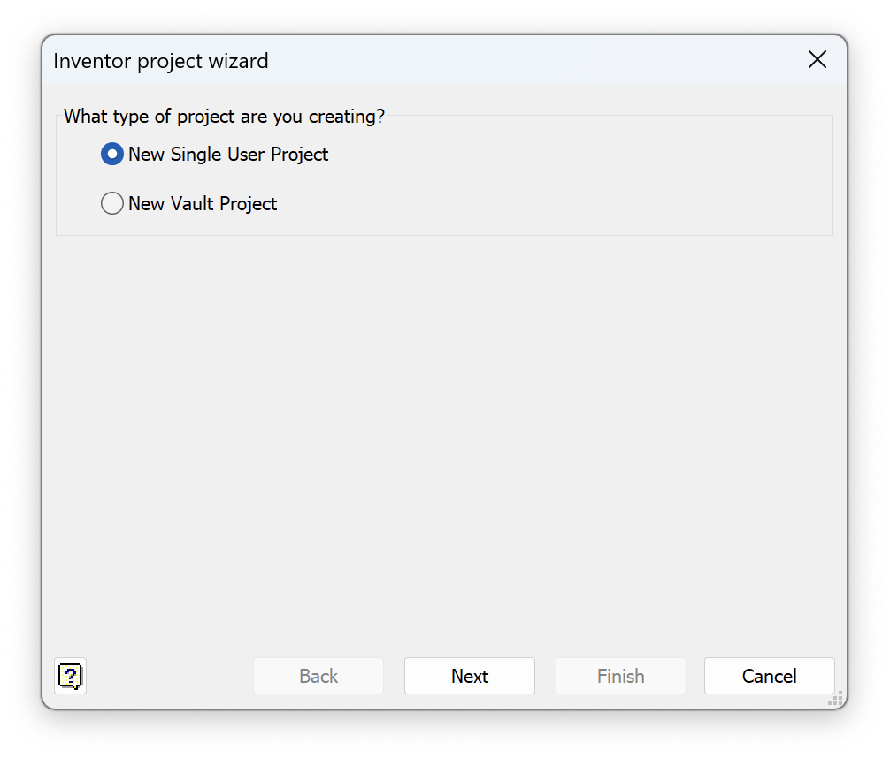
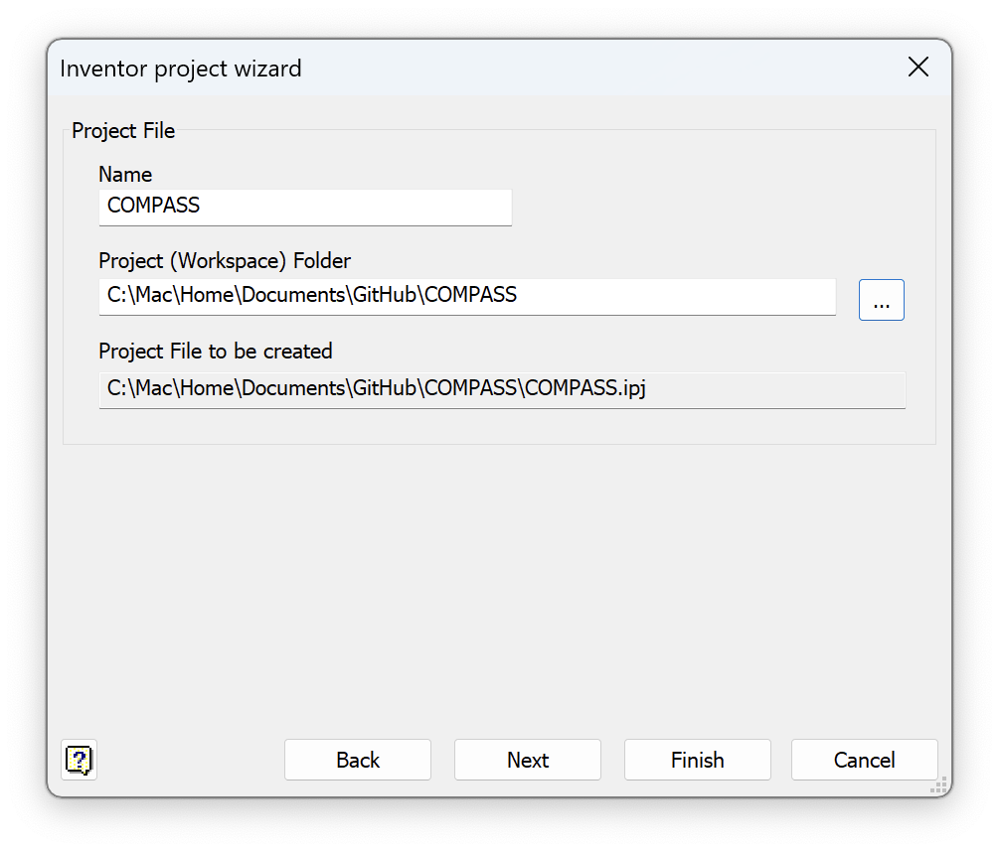

Software
The software for optical simulations and computer-aided design (CAD) is optional and only required for users who wish to modify or customize Altair. However, navigate is mandatory for microscope operation unless an alternative open-source acquisition platform is used. For Altair-LSFM, which operates in a sample-scanning geometry, shearing is necessary to properly align data spatially; while various software options exist, we provide Python-based scripts for this task. Lastly, deconvolution is optional, depending on the user’s specific imaging and analysis needs.
Optical Simulations
Performing accurate optical simulations is essential for designing and validating the illumination pathway of Altair. To facilitate this process, we used Zemax OpticStudio (Ansys) to model the full illumination system, optimizing the placement of each optical element to achieve the desired focusing and collimation properties.
To replicate or modify these simulations, a Zemax OpticStudio (Ansys) professional or academic license is needed. This enables optical modeling, ray tracing, and tolerance analysis. The Zemax simulation files used to design the Altair illumination system are included in the project’s GitHub repository. These files allow users to inspect and modify the optical layout, test different lens configurations, and refine performance metrics as needed.
Computer-Aided Design
For the design of custom parts and the baseplate, we used Autodesk Inventor. Academic licenses for Autodesk products are available free of charge on their website.
To ensure Autodesk Inventor correctly locates and manages the CAD files, it is necessary to set up a new project and define the workspace. We recommend following these steps:
Setting Up a New Project in Autodesk Inventor
Launch Autodesk Inventor
Navigate to File → Manage → Projects
When the Projects window appears, select New
Choose New Single User Project
Specify a Project Name and set the root directory of the cloned Altair GitHub repository as the Project (Workspace) Folder

{kind=link}
{kind=link}
{kind=link}
{kind=link}
By configuring Autodesk Inventor in this way, all CAD files associated with Altair will be properly linked, ensuring seamless loading of all components and assemblies.
Post-Processing
After image acquisition, post-processing is often necessary to extract meaningful biological information. The navigate software package includes libraries for performing basic image post-processing tasks, such as shearing correction, which can be applied directly to acquired datasets. We provide Python-based scripts in the post_processing folder of this repository as an example.
Deconvolution
For more advanced processing, such as deconvolution, we recommend using PetaKit5D. This software package is optimized for handling large-scale volumetric datasets and provides state-of-the-art deconvolution algorithms to enhance image quality and resolution [1]. PetaKit5D must be installed separately and can be found here: PetaKit5D GitHub Repository
Citations